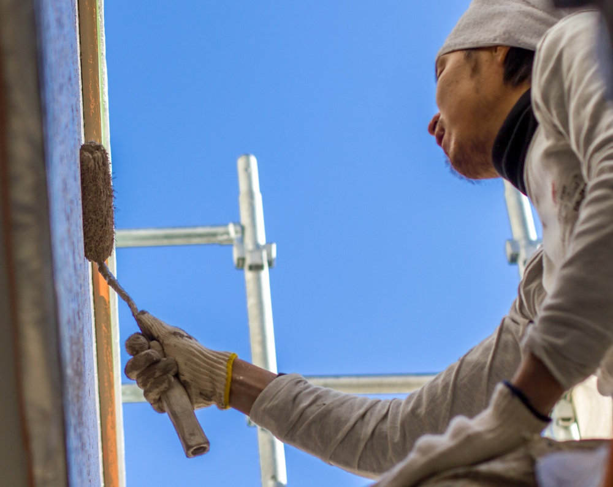
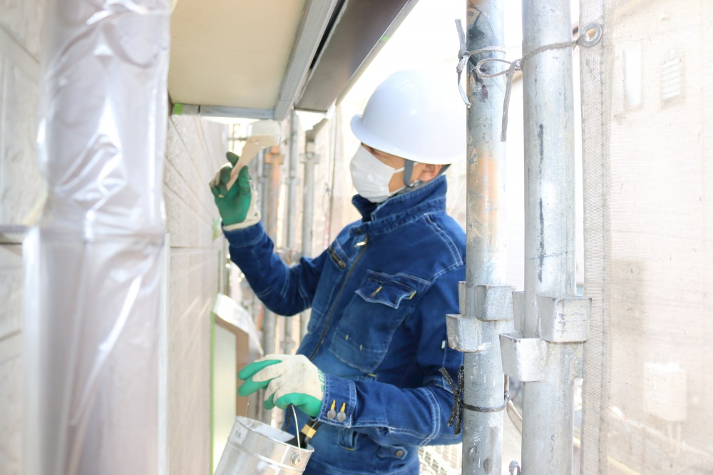
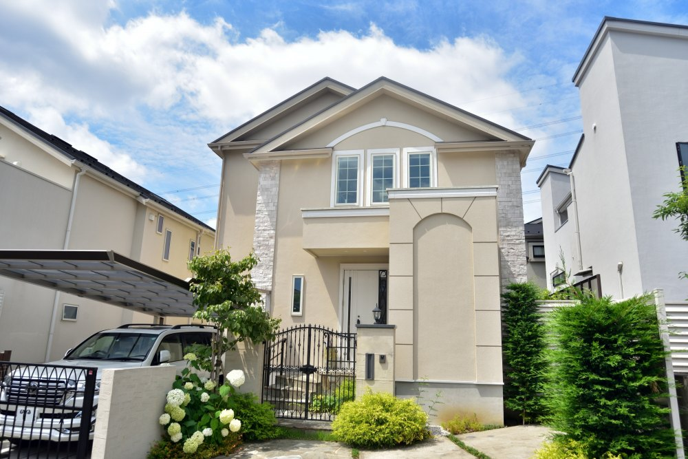
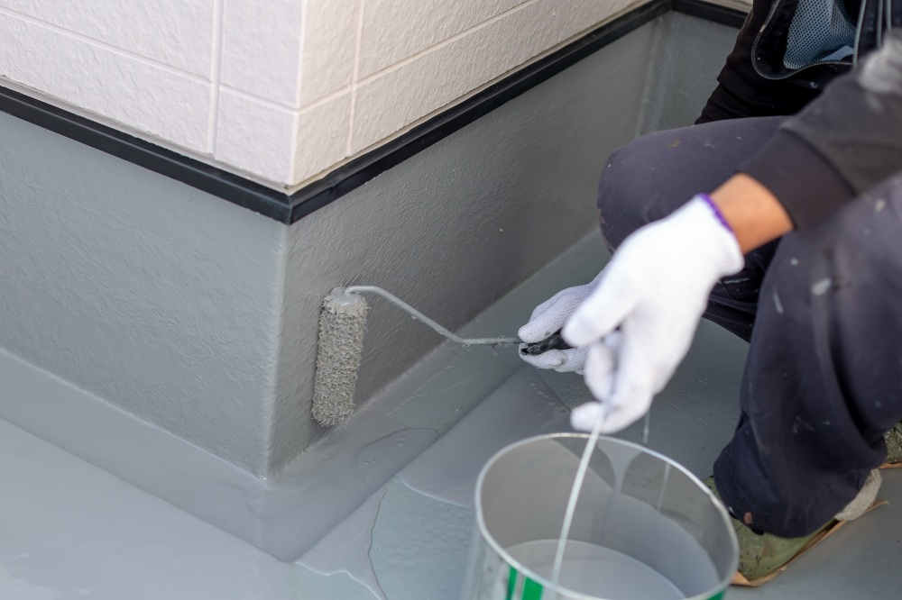
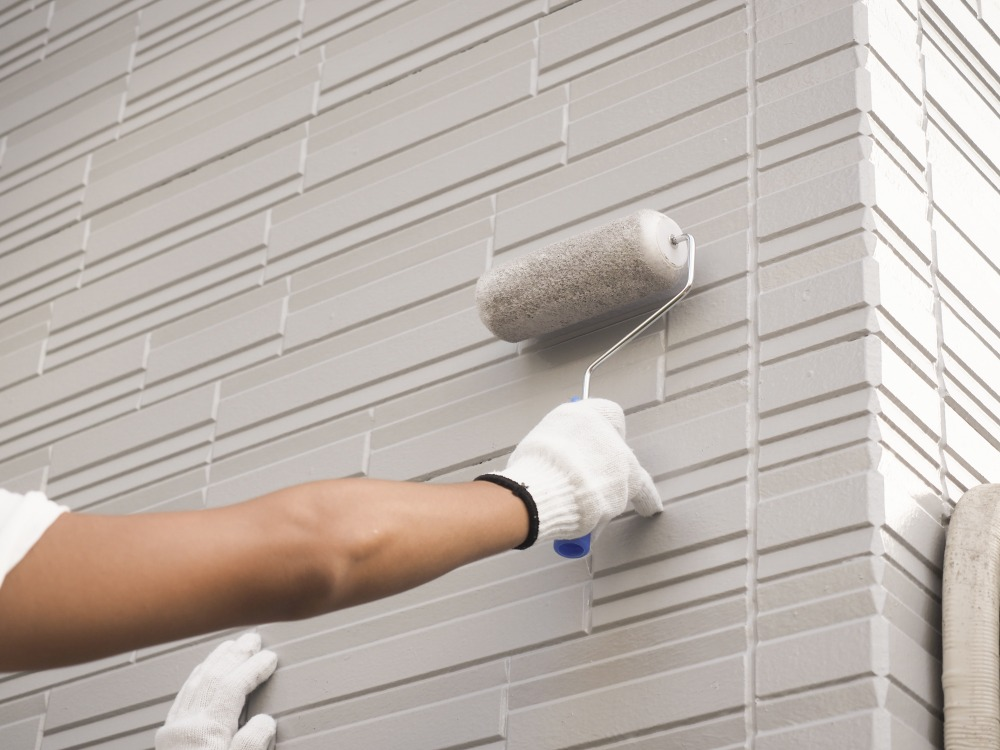

春日部市の地域密着型の塗装会社です
有限会社サンキは、春日部市を拠点に、外壁・屋根塗装、外構工事、住宅リフォームを手がけている地域密着型の会社です。
平成2年の創業以来、埼玉県塗装業協同組合に加盟し、全スタッフが一級塗装技能士の資格を持っています。お見積りから工事の完了まで、すべて自社で責任を持って施工いたします。
会社案内を見る
サンキのこだわり
お客様に安心してお任せいただくために、4つのことを大切にしています。

地域密着型
春日部市を中心に、川口市・越谷市・三郷市・吉川市・松伏町・上尾市・さいたま市・白岡市など、埼玉県全域に対応しております。また、千葉県・茨城県からもご依頼をいただいており、お客様からのご紹介を通じて、多くのご縁をいただいております。

完全自社施工
下請けには一切出さず、一流メーカーの質の高い材料と質の高い技術で施工いたします。作業の確認には、代表が必ず同行いたします。
お見積り無料
お見積りは無料です。ご予算に合わせたプランをご提案いたしますので、お気軽にお問い合わせください。

万全のアフターケア
工事後には保証書を発行いたします。施工中の様子をおさめた写真アルバムも進呈しております。
施工例
サンキがこれまでに手がけた工事の一部です。


塗装の効果
塗り替えは、見た目をきれいにするだけではありません。

外観の変化
建物の見た目が一新されます。色の選び方しだいで、お家のイメージをがらりと変えることもできます。

カビ・藻にも強くなります
塗料に含まれる抗菌成分が、コケやカビの発生を防ぎ、腐食を防止します。

外壁が丈夫になります
目地を既存のままにせず打ち直すことで、外壁を長持ちさせます。
主な取り扱い業務
塗装はもちろん、防水・屋根・外構・リフォームまで、お家のことをまとめてご相談いただけます。
- 塗装工事
- 外壁塗装
- 屋根塗装
- 防水工事
- 雨漏補修
- 屋根工事
- 住宅リフォーム
- 内装工事
- 壁紙張替
よくある質問
見積もりは無料ですか？
はい、お見積もりは無料です。お気軽にお問い合わせください。
工事中、家にいる必要がありますか？
基本的には在宅の必要はありませんが、事前に工事内容について打ち合わせをさせていただきます。
雨の日でも工事は進行しますか？
雨天時は塗料の乾燥や仕上がりに影響があるため、工事を中止する場合があります。天候に合わせてスケジュールを調整します。